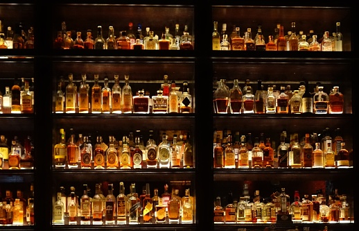

<nav class="navbar navbar-expand-lg navbar-dark bg-dark">
    <div class="container-fluid" accordion-group="" ng-init="status = {isOpen: false}" is-open="status.isOpen">
        <a class="navbar-brand" routerLink="" href="#">
            
            The Mixologist Cookbook
        </a>
        <button class="navbar-toggler" type="button" data-bs-toggle="collapse" data-bs-target="#navbarNav" aria-controls="navbarNav" aria-expanded="false" aria-label="Toggle navigation">
            <span class="navbar-toggler-icon"></span>
        </button>
        <div class="collapse navbar-collapse" id="navbarNav" ng-class="{'is-open': status.isOpen}">
            <ul class="navbar-nav">
                <li class="nav-item">
                    <a class="nav-link" routerLink="cocktail">Cocktail</a>
                </li>
                <li class="nav-item">
                    <a class="nav-link" routerLink="ingredient">Ingredient</a>
                </li>
                <li class="nav-item">
                    <a class="nav-link" routerLink="login">Login</a>
                </li>
            </ul>
        </div>
    </div>
</nav>
